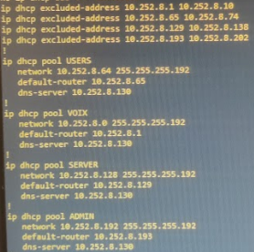

UE x.3 – Program: Tools & Applications
In this module, we learned to design, code, and test communicating applications, to process and leverage network data, and to industrialize our developments with version control and continuous integration; these skills cover core components CE3.01 to CE3.05.
SAE1.04 – Online Presence
Skill: Digital Identity & E-reputation
Description
Reflection on digital identity, creating a personal web page, and presenting a hobby or project.
Evidence
- Project website: ochf21.github.io/portfolio
Conclusion
Skills: digital identity management, professional web creation, and e-reputation improvement.
SAE1.05 – Data Processing
Skill: Network Programming (Scapy)
Description
Python scripts using Scapy: host discovery and Man-in-the-Middle attack.
Evidence
- Host discovery script and ARP spoofing script (Scapy).
Conclusion
Skills: packet analysis & manipulation, Scapy scripting.
SAE2.04 – Integrative Project
Skill: Local Network Management & Configuration
Description
VLAN network model, SIP telephony, MQTT data collection, and a web app for data visualization.
Evidence
- Network topology, IP plan, DHCP, NAT, ACL.

Conclusion
Skills: network administration, VoIP, MQTT, and Django/MySQL development.
SAE3.02 – Communicating Applications
Skill: Communicating Applications
Description
Development of a communicating application distributing the execution of Python, Java, or C code across a client-master-slave cluster via TCP sockets, with load balancing and reliable data exchange.
Evidence
- GitHub repository: github.com/ochf21/SAE302
- PDF report
- Presentation video: YouTube
Conclusion
Enhanced skills in network programming, inter-process communication, and client/server architecture.